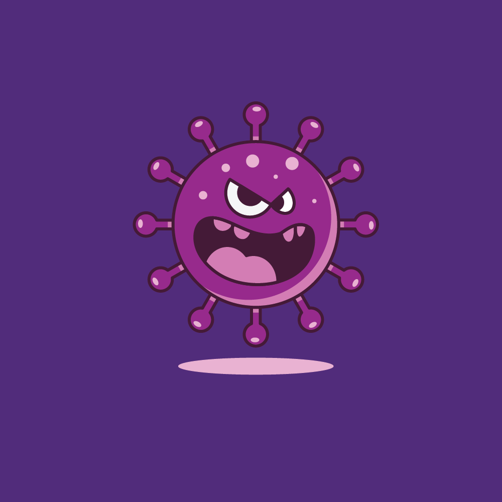

Styles, components, patterns and standards.
The Design System is a guide to how user interfaces should look, feel, and behave at UQ. The system provides styles, layouts, components, patterns, and examples of common user interfaces at UQ. It aims to help designers and developers build projects more easily and supports the application of the UQ Brand Guidelines to ensure user interfaces across UQ are consistent.
Follow our Get started guide to see how you can use the Design System in your project. If your project has unique needs, you may need to adapt and extend what is provided in the system. If you want to share your work, contact ADS UI team to become a contributor.
These libraries a collection of reusable UI elements and guidelines that product teams use to build and maintain consistent experiences across digital products.
The Design System is managed and supported by the User Interface Design and Development team in ITS Application Development and Support (ADS-UI for short). Join the Design System community on UQ Yammer for updates and discussion or contact ADS UI team with questions and feedback.
We'd love to come talk to your team about the design system and answer any questions you have.

If UQ development teams work together, we can save time and build better.
Our GitHub repository contains all the code and content which make up the design system.
contact ADS UI team if you'd like to contribute to the design system.